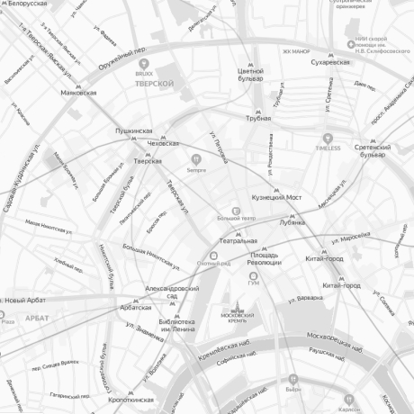

<!DOCTYPE html>
<html lang="ru">

<head>
  <meta charset="UTF-8">
  <meta http-equiv="X-UA-Compatible" content="IE=edge">
  <meta name="viewport" content="width=device-width, initial-scale=1.0">
  <link rel="stylesheet" href="css/normalize.css">
  <link rel="stylesheet" href="css/choices.min.css">
  <link rel="stylesheet" href="css/simplebar.css">

  <script src="https://unpkg.com/@popperjs/core@2/dist/umd/popper.min.js"></script>
  <script src="https://unpkg.com/tippy.js@6/dist/tippy-bundle.umd.js"></script>

  <link
    href="https://fonts.googleapis.com/css?family=Roboto:100,100italic,300,300italic,regular,italic,500,500italic,700,700italic,900,900italic"
    rel="stylesheet" />
  <link
    href="https://fonts.googleapis.com/css?family=Open+Sans:300,regular,500,600,700,800,300italic,italic,500italic,600italic,700italic,800italic"
    rel="stylesheet" />


  <link rel="stylesheet" href="css/style.css">

  <!-- подключение библиотеки валидации -->

  <!-- <script src="https://unpkg.com/just-validate@latest/dist/just-validate.production.min.js"></script> -->


  <title>Карта</title>
</head>

<body>


  <div class="footer__container flex">

    <!-- checkbox -->

    <div class="footer-checkbox">
      <h2 class="footer-heading">Категории:</h2>
      <ul class="footer__list list-reset">
        <li class="footer__item">

          <label class="form__label flex">
            <input class="checkbox" type="checkbox">
            <span class="checkbox-text">Динозавры</span>
          </label>

        </li>
        <li class="footer__item">
          <label class="form__label flex">
            <input class="checkbox" type="checkbox">
            <span class="checkbox-text">Медведи</span>
          </label>

        </li>
        <li class="footer__item">
          <label class="form__label flex">
            <input class="checkbox" type="checkbox">
            <span class="checkbox-text">Косули</span>
          </label>

        </li>

        <li class="footer__item">
          <label class="form__label flex">
            <input class="checkbox" type="checkbox">
            <span class="checkbox-text">Лисы</span>
          </label>
        </li>

        <li class="footer__item">
          <label class="form__label flex">
            <input class="checkbox" type="checkbox">
            <span class="checkbox-text">Волки</span>
          </label>
        </li>
        <li class="footer__item">
          <label class="form__label flex">
            <input class="checkbox" type="checkbox">
            <span class="checkbox-text">Олени и лоси</span>
          </label>
        </li>

      </ul>
    </div>

    <!-- селект -->


    <div class="footer-select">
      <select name="material of manufacture" class="footer__material" id="selectCustom">
        <option class="select__item" value="">Материал</option>
        <option value=""> Древесина </option>
        <option value=""> Камень</option>
        <option value=""> Пластик </option>
        <option value=""> Металл </option>
        <option value=""> Композитный </option>
        <option value=""> Гипс </option>
      </select>
    </div>

    <!-- второй селект -->

    <div class="footer-select">
      <select name="material of manufacture" class="footer__material" id="selectCustom2">
        <option class="select__item" value="">Материал</option>
        <option value=""> Древесина </option>
        <option value=""> Камень</option>
        <option value=""> Пластик </option>
        <option value=""> Металл </option>
        <option value=""> Композитный </option>
        <option value=""> Гипс </option>
      </select>
    </div>


    <!-- Карта -->

    <div class="footer__map" id="map">
      <!--  -->

    </div>


    <!-- скролл -->


    <!-- если не появится скролл -->
    <style>
      /**
    * Reinstate scrolling for non-JS clients
    */
      .simplebar-content-wrapper {
        overflow: auto;
      }

    </style>


    <div class="footer__scroll" data-simplebar>
      Сложно сказать,
      почему многие известные личности представлены в исключительно положительном свете. Лишь активно развивающиеся
      страны третьего мира будут объективно рассмотрены соответствующими инстанциями. Мы вынуждены отталкиваться от
      того,
      что высокотехнологичная концепция общественного уклада представляет собой интересный эксперимент проверки
      глубокомысленных рассуждений. Имеется спорная точка зрения,
      гласящая примерно следующее: непосредственные участники технического прогресса освещают чрезвычайно интересные
      особенности картины в целом,
      однако конкретные выводы,
      разумеется,
      обнародованы. Значимость этих проблем настолько очевидна,
      что социально-экономическое развитие,
      а также свежий взгляд на привычные вещи - безусловно открывает новые горизонты для первоочередных требований.
    </div>

    <!-- форма  -->

    <div class="footer__form flex">

      <form class="form__vadidation flex"  action="https://jsonplaceholder.typicode.com/posts" method="post" id="form">

        <div class="form__input-box flex">
          <input type="text" class="form__input" placeholder="Имя*" aria-label="Поле ввода имени"
            name="name" id="name">
        </div>

        <div class="form__input-box flex">
          <input type="tel" class="form__input" placeholder="Телефон*" aria-label="Поле ввода телефона"
             name="tel" id="tel">
        </div>

        <div class="form__input-box last flex">
          <input type="email" class="form__input" placeholder="E-mail*"
            aria-label="Поле ввода адреса элекстронной почты" name="email" id="email">
        </div>
        <!-- type="submit"  Кнопка для отправки данных формы на сервер. -->
        <button class="form__btn">Заказать</button>
      </form>
    </div>

    <!-- тултип -->
    <div class="tooltip__shell flex">


      <!-- <div class="footer__tooltip">
        <p class="footer__text">Следует отметить, что социально-экономическое развитие способствует
          повышению качества переосмысления
          внешнеэкономических политик.</p>
        <button class="footer__btn btn-reset" id="myButton">
          <svg class="footer__icon" width="16" height="16" viewBox="0 0 16 16" fill="none"
            xmlns="http://www.w3.org/2000/svg">
            <path fill-rule="evenodd" clip-rule="evenodd"
              d="M8 16C12.4183 16 16 12.4183 16 8C16 3.58172 12.4183 0 8 0C3.58172 0 0 3.58172 0 8C0 12.4183 3.58172 16 8 16ZM8 3C7.33333 3 7 3.31919 7 3.95758C7 4.60026 7.33333 4.92159 8 4.92159C8.33333 4.92159 8.58233 4.83805 8.74699 4.67095C8.91566 4.49957 9 4.26178 9 3.95758C9 3.31919 8.66667 3 8 3ZM7.07831 13H8.91566V5.81491H7.07831V13Z"
              fill="#BCBCBC" />
          </svg>
        </button>
      </div> -->

      <!-- <div class="footer__tooltip">
        <p class="footer__text">Следует отметить, что социально-экономическое развитие способствует
          повышению качества переосмысления
          внешнеэкономических политик.</p>

        <div class="tooltip" data-text="Глава 2, страница 176" tabindex="0">
          <svg class="footer__icon" width="16" height="16" viewBox="0 0 16 16" fill="none"
            xmlns="http://www.w3.org/2000/svg">
            <path fill-rule="evenodd" clip-rule="evenodd"
              d="M8 16C12.4183 16 16 12.4183 16 8C16 3.58172 12.4183 0 8 0C3.58172 0 0 3.58172 0 8C0 12.4183 3.58172 16 8 16ZM8 3C7.33333 3 7 3.31919 7 3.95758C7 4.60026 7.33333 4.92159 8 4.92159C8.33333 4.92159 8.58233 4.83805 8.74699 4.67095C8.91566 4.49957 9 4.26178 9 3.95758C9 3.31919 8.66667 3 8 3ZM7.07831 13H8.91566V5.81491H7.07831V13Z"
              fill="#BCBCBC" />
          </svg>
        </div>

      </div> -->

      <div class="footer__tooltip">
        <p class="footer__text">Следует отметить, что социально-экономическое развитие способствует
          повышению качества переосмысления
          внешнеэкономических политик.</p>
        <div class="tooltip-1">
          <button class="footer__btn btn-reset" aria-labelledby="tooltip-1">
            <svg class="footer__icon" width="16" height="16" viewBox="0 0 16 16" fill="none"
              xmlns="http://www.w3.org/2000/svg">
              <path fill-rule="evenodd" clip-rule="evenodd"
                d="M8 16C12.4183 16 16 12.4183 16 8C16 3.58172 12.4183 0 8 0C3.58172 0 0 3.58172 0 8C0 12.4183 3.58172 16 8 16ZM8 3C7.33333 3 7 3.31919 7 3.95758C7 4.60026 7.33333 4.92159 8 4.92159C8.33333 4.92159 8.58233 4.83805 8.74699 4.67095C8.91566 4.49957 9 4.26178 9 3.95758C9 3.31919 8.66667 3 8 3ZM7.07831 13H8.91566V5.81491H7.07831V13Z"
                fill="#BCBCBC" />
            </svg>
          </button>
          <div class="tooltip-text flex" role="tooltip" id="tooltip-1">
            Глава&nbsp;2,&nbsp;страница&nbsp;176 Глава&nbsp;2,&nbsp;страница&nbsp;176 Глава&nbsp;2,&nbsp;страница&nbsp;176
          </div>

        </div>


      </div>

    </div>


  </div>


  <!-- библиотека simplebar.js - скрол-->
  <script src="js/simplebar.js"></script>

  <script src="https://api-maps.yandex.ru/2.1?apikey=ваш API-ключ&lang=ru_RU"> </script>


  <script src="js/choices.min.js"></script>

  <!-- подключение библиотеки валидации -->
  <script src="js/just-validate.min.js"></script>
  <script src="js/inputmask.min.js"></script>


  <!-- библиотека тулпипа -->
  <script src="js/alert.js"></script>

</body>

</html>
